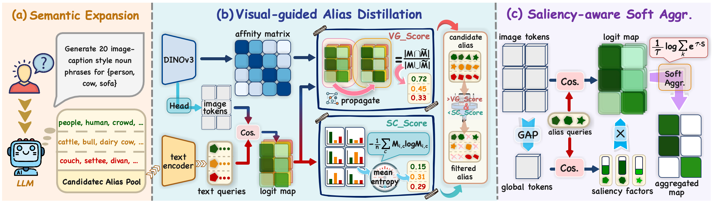

Problem
CLIP-based training-free dense prediction methods suffer from deep spatial bias, while even stronger spatial backbones like dino.txt can still break down when the text side is semantically ambiguous.
ICML 2026

Figure 1. Repository preview image for VIP. Dedicated method and benchmark figures can be swapped in here later without changing the page structure.
Training-free open-vocabulary semantic segmentation still struggles to stay both efficient and generalizable, especially when CLIP-style models introduce strong spatial bias. VIP moves beyond the CLIP-based route and instead builds on the spatially-aware dino.txt framework for dense prediction. The core issue is that ambiguous text queries can still misalign dense cross-modal interactions, so VIP refines text semantics through visual-guided prompt evolution. Concretely, it combines alias expansion, visual-guided distillation, and saliency-aware aggregation to produce higher-fidelity predictions with only marginal inference time and memory overhead.
VIP is designed as an efficient training-free dense vision-language inference pipeline that improves text-query quality before final dense matching.
CLIP-based training-free dense prediction methods suffer from deep spatial bias, while even stronger spatial backbones like dino.txt can still break down when the text side is semantically ambiguous.
VIP evolves prompts with visual guidance. It expands aliases, distills useful semantic cues from image evidence, and improves query expressiveness before dense cross-modal interaction.
Saliency-aware aggregation makes the mined semantic cues more robust, which helps recover fine-grained object perception while keeping inference overhead low.
VIP targets the semantic mismatch between text queries and dense visual evidence instead of only changing the vision backbone.
According to the paper abstract, VIP improves average mIoU by 1.4% to 8.4% over top-leading methods.
The reported gains come with only marginal additional inference time and memory overhead, which is important for practical use.
Figure 2. This section currently reuses the repository preview image because the current repo snapshot does not include standalone method and benchmark figure assets for the project page.
@article{zhu2026vip,
title = {VIP: Visual-guided Prompt Evolution for Efficient Dense Vision-Language Inference},
author = {Hao Zhu and Shuo Jin and Wenbin Liao and Jiayu Xiao and Yan Zhu and Siyue Yu and Feng Dai},
journal = {arXiv preprint arXiv:2605.12325},
year = {2026}
}